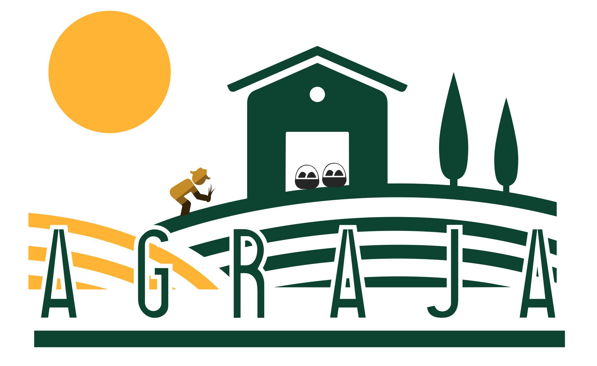

<nav class="navbar navbar-expand-sm bg-body-tertiary position-relative">
  <div class="container-fluid">
    
    <button (click)="(collapse = !collapse)" class="navbar-toggler" type="button" data-bs-toggle="collapse"
      data-bs-target="#navbarNav" aria-controls="navbarNav" aria-expanded="false" aria-label="Toggle navigation">
      <span class="navbar-toggler-icon"></span>
    </button>

    <div #navBar class="navbar-collapse ms-5 me-5" id="navbarNav" [ngClass]="{
          'collapse': collapse, 
          'animate__animated animate__fadeInDown text-center': !collapse
        }">
      @if(isLogged()){
      <ul class="navbar-nav">
        <li class="nav-item">
          <a class="nav-link fs-6 ms-2 me-2" [routerLink]="['/home/agro']" [ngClass]="{
                  'active underlined-menu': actualMenu === 'agro'
                }">
            AGRO
          </a>
        </li>
        <li class="nav-item">
          <a class="nav-link fs-6 ms-2 me-2" [routerLink]="['/home/caja']" [ngClass]="{
                  'active underlined-menu': actualMenu === 'caja'
                }">
            CAJA
          </a>
        </li>
        <li class="nav-item">
          <a class="nav-link fs-6 ms-2 me-2" [routerLink]="['/home/clientes']" [ngClass]="{
                  'active underlined-menu': actualMenu === 'clientes'
                }">
            CLIENTES
          </a>
        </li>
      </ul>
      }
    </div>
  </div>
</nav>
<!-- BREADCRUMB -->

<div class="container d-flex">
  <ng-container *ngIf="breadcrumbs">
    <nav aria-label="breadcrumb" class="mt-0 mb-0 ps-0">
      <ol class="breadcrumb">
        <li class="breadcrumb-item active" *ngFor="let breadcrumb of breadcrumbs; let last = last"
          [ngClass]="{'active-1': last}">
          <a *ngIf="!last" [routerLink]="[breadcrumb.url]">{{breadcrumb.label}}</a>
          <span *ngIf="last">{{breadcrumb.label}}</span>
        </li>
      </ol>
    </nav>
  </ng-container>
  <div class="ms-auto">
    <a class="nav-link fs-6" [routerLink]="['/home/login']">{{isLogged() ? getUserName() : 'Login'}}</a>
  </div>
</div>

<div class="container rounded-2 mx-auto mt-4 mb-4 pt-4 pb-4 shadow main-container position-relative" [ngClass]="{
    'shadow': (breadcrumbs.length > 0 && breadcrumbs[breadcrumbs.length - 1].label !== 'login'),
    'container': (breadcrumbs.length > 0 && breadcrumbs[breadcrumbs.length - 1].label !== 'login'),
    'main-container': (breadcrumbs.length > 0 && breadcrumbs[breadcrumbs.length - 1].label !== 'login')
    }">
  <router-outlet></router-outlet>
</div>

<footer>
  <div class="footer text-light text-center mt-0 p-1 fixed-bottom">
    <span class="footer-text">Creada con ❤️ por Aimar Mundiñano | Codehouse Academy 2023</span>
  </div>
</footer>